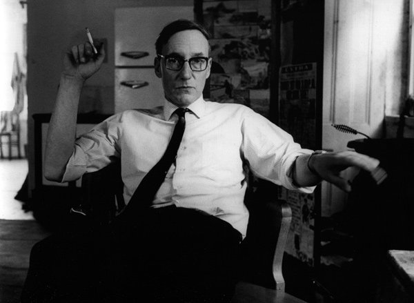
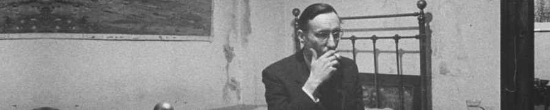

|
|

William Seward Burroughs II (also known by his pen name William Lee; February 5, 1914 - August 2, 1997) was an American novelist, short story writer, essayist, painter, and spoken word performer. A primary figure of the Beat Generation and a major postmodernist author, he is considered to be "one of the most politically trenchant, culturally influential, and innovative artists of the 20th century". His influence is considered to have affected a range of popular culture as well as literature. Burroughs wrote eighteen novels and novellas, six collections of short stories and four collections of essays. Five books have been published of his interviews and correspondences. He also collaborated on projects and recordings with numerous performers and musicians, and made many appearances in films.
He was born to a wealthy family in St. Louis, Missouri, grandson of the inventor and founder of the Burroughs Corporation, William Seward Burroughs I, and nephew of public relations manager Ivy Lee. Burroughs began writing essays and journals in early adolescence. He left home in 1932 to attend Harvard University, studied English, and anthropology as a postgraduate, and later attended medical school in Vienna. After being turned down by the Office of Strategic Services and U.S. Navy in 1942 to serve in World War II, he picked up the drug addiction that affected him for the rest of his life, while working a variety of jobs. In 1943 while living in New York City, he befriended Allen Ginsberg and Jack Kerouac, the mutually influential foundation of which grew into the Beat Generation, and later the 1960s counterculture.
Burroughs died in Lawrence, Kansas, on August 2, 1997, from complications of a heart attack he had suffered the previous day. He was interred in the family plot in Bellefontaine Cemetery in St. Louis, Missouri, with a marker bearing his full name and the epitaph "American Writer". The grave lies to the right of the white granite obelisk of William Seward Burroughs I (1857-1898).

|
|